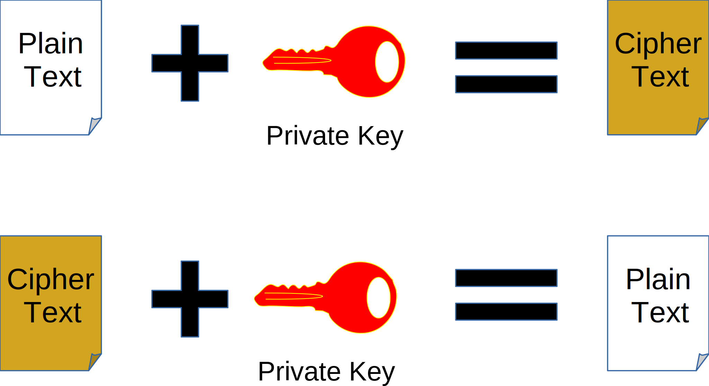
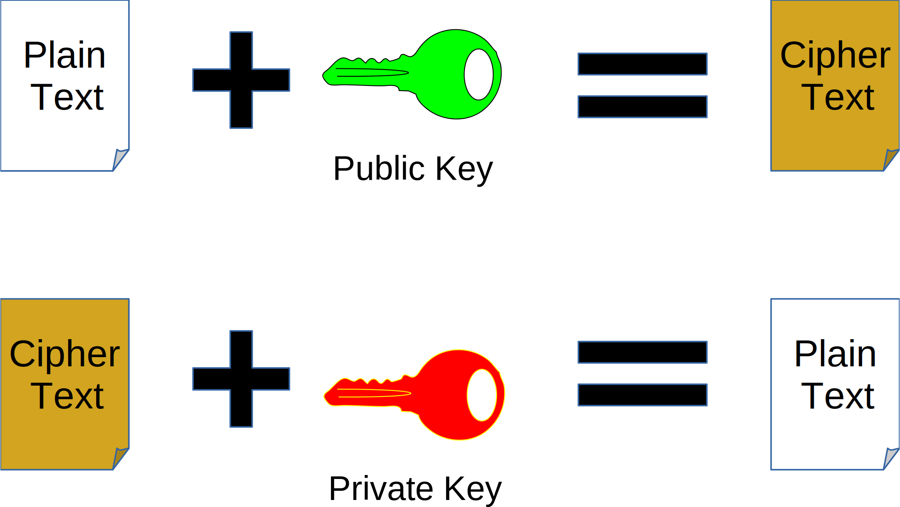
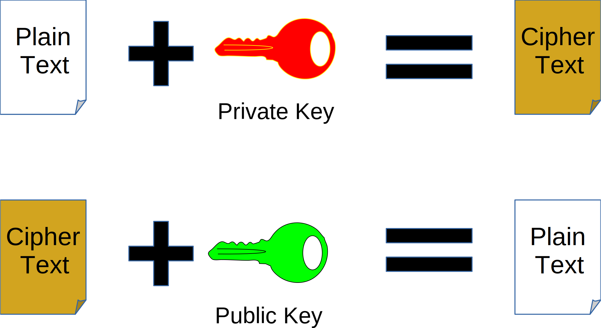
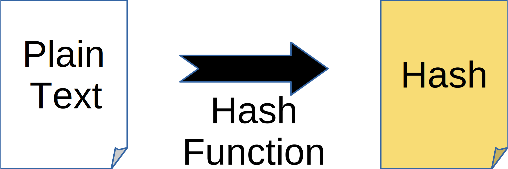
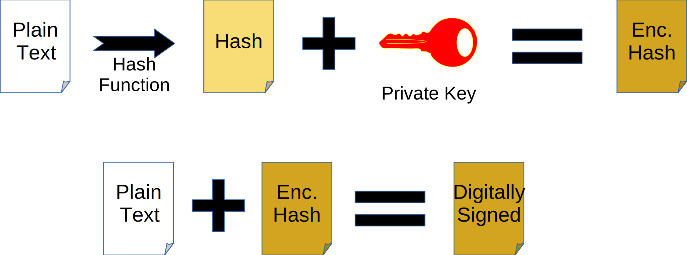
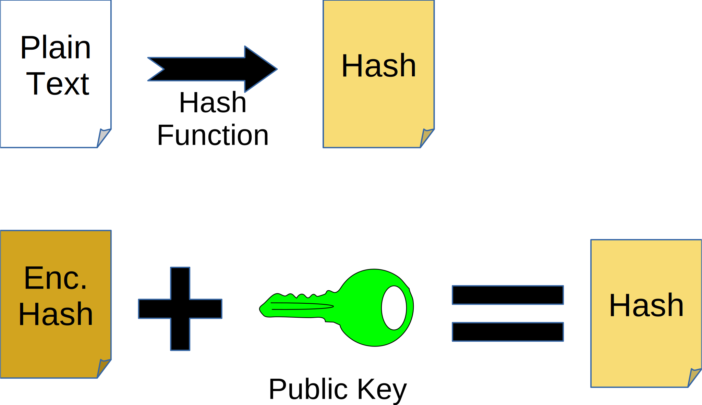
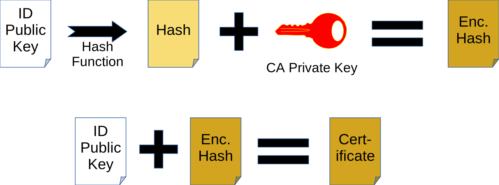
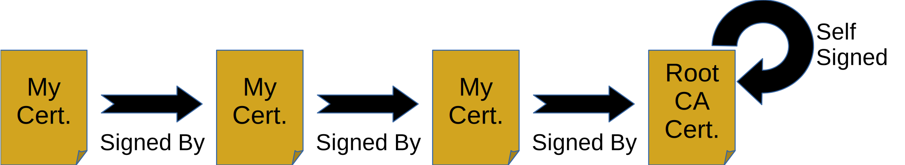

Lots of questions about TLS on the mailing lists
It is clear many folks don’t understand how TLS works
Debugging something you don’t understand is hard
Should use TLS not SSL
I’ll probably use them interchangeably
(as do the Tomcat docs)
Use the same secret key to encrypt and decrypt
Pair of keys, A and B
A and B are mathematically related
Very hard to derive one from the other
Encrypt with A, decrypt with B
Encrypt with B, decrypt with A
Make one key public
Keep one key private
Encrypt with public key, decrypt with private key
Encrypt with private key, decrypt with public key
Generate a fingerprint (hash) for a given input
Small change in input gives a large change in the hash
Very difficult to generate an input for a given hash
Proves a document was sent by a given entity
Validation
If the hashes match...
...then the public key decrypted the digital signature...
...so the private key created the digital signature...
...so the owner of the private key signed the document
Who owns the private key?
Associates a public key with an identity
CA is Certificate Authority
Need to link CA's public key to CA's identity
Use another certificate
Result is a chain of certificates
Chain ends with a root certificate authority
There are multiple root CAs
Self-signed
Alternative trust path required
Often installed by OS
Manual validation against root CA's web site
Client:
Server:
Client generates random number
Client sends message to server
Server generates random number
Server compares algorithms
Server sends message to client
Server sends message to client
Client validates certificate
Server sends message to client
Client generates pre-master-secret
Client encrypts PMS with Server's public key
Client sends message to server
Client generates master-secret
Client switches to encrypted mode
Client sends message to server
Client has completed handshake
Client sends message to server
Server decrypts PMS
Server creates MS
Server switches to encrypted mode
Server sends message to client
Server has completed handshake
Server sends message to client
Algorithms agreed in step 2
Symmetric
Master secret is shared secret key
Client certificate authentication
Server Name Indication
Application Layer Protocol Negotiation